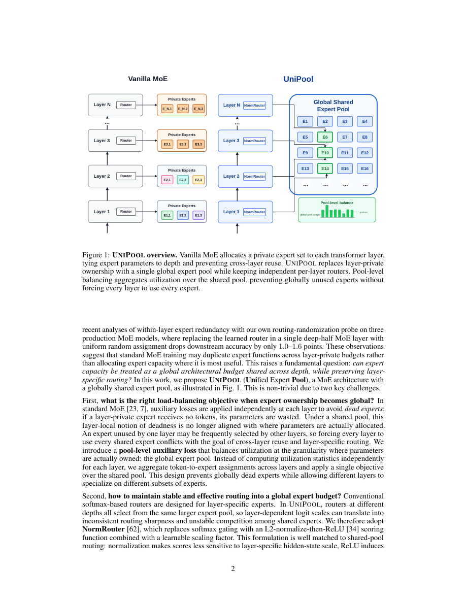

#1
★ 7/10
UniPool: A Globally Shared Expert Pool for Mixture-of-Experts
UniPool：用于混合专家模型的全局共享专家池

图 Figure · Page 2 of paper
🎯 全局共享专家池替代逐层专家集，参数更省、性能更好
A globally shared expert pool replaces per-layer expert sets in MoE, cutting expert parameters while improving quality.
| 维度 | 中文 | English |
|---|---|---|
| ❓ 待解决 的问题 |
传统的混合专家模型（MoE）为每一层单独分配一套专家，导致专家参数量随模型深度线性增长。研究发现，深层的路由机制存在大量冗余——用随机路由替换深层的学习路由，模型性能几乎不变。那么，每层真的需要独立的专家集吗？ | Standard Mixture-of-Experts (MoE) transformer architectures assign a dedicated, isolated set of experts to each layer. This means expert parameters grow linearly with model depth, even when deeper layers may not need unique expert capacity. The question is: do we really need every layer to own its own separate experts? |
| 💡 解决 的亮点 |
- **全局专家池**：用单一共享池替代每层独立专家集，各层通过独立路由器访问同一池，深度扩展与专家参数量解耦。 - **池级辅助损失**：提出跨整个专家池的负载均衡损失，而非仅在层内平衡，保证训练稳定且专家被均匀利用。 - **NormRouter**：引入稀疏且尺度稳定的路由机制，专为共享池设计，有效避免训练不稳定问题。 - **亚线性专家扩展**：证明专家参数无需随深度线性增长，压缩版UniPool仅用41.6%–66.7%的标准专家参数预算即可持平或超越原始MoE。 | - **Global Expert Pool**: Replaces per-layer expert ownership with a single shared pool accessed by independent per-layer routers, decoupling depth from expert-parameter count. - **Pool-Level Auxiliary Loss**: Introduces a novel balancing loss across the entire pool (not just per-layer), ensuring stable and uniform expert utilization during training. - **NormRouter**: Adopts a sparse, scale-stable routing mechanism specifically designed to reliably address a shared pool, preventing training instability. - **Sublinear Expert Scaling**: Demonstrates that expert parameters can grow sublinearly with depth — reduced-pool variants use only 41.6–66.7% of standard expert budgets while matching or beating vanilla MoE. |
| 🧪 实验 内容 |
实验在五个规模的LLaMA架构模型（参数量分别为182M、469M、650M、830M、978M）上进行，所有模型均在Pile数据集的300亿token上训练。基线为参数量匹配的逐层MoE模型。评估指标包括验证损失和困惑度。另外进行了消融实验，探索使用41.6%–66.7%专家参数预算的压缩池变体，以及UniPool与更细粒度专家分解的可组合性。还设计了路由探针实验，用均匀随机路由替换学习路由来量化各层路由冗余。 | Experiments were conducted on five LLaMA-architecture model scales (182M, 469M, 650M, 830M, and 978M parameters), all trained on 30 billion tokens from the Pile dataset. The baselines are vanilla per-layer MoE models matched in total parameter count. Evaluation metrics include validation loss and perplexity. Additional ablations explore reduced-pool variants (using 41.6%–66.7% of the standard expert-parameter budget) and the composability of UniPool with finer-grained expert decomposition. A routing probe experiment replaces learned routers with uniform random routing to quantify per-layer routing redundancy. |
| 📊 实验 结果 |
在全部五个模型规模上，UniPool均稳定优于参数匹配的原始MoE基线，最高将验证损失降低0.0386。压缩版UniPool仅使用标准专家参数预算的41.6%–66.7%，即可持平甚至超越完整逐层MoE。路由探针实验显示，在多个生产级MoE模型中，用随机路由替换深层的学习路由仅导致下游准确率下降1.0–1.6个点，充分验证了共享池设计的动机。 | Across all five model scales, UniPool consistently improves validation loss and perplexity over matched vanilla MoE baselines. The best improvement reaches a validation loss reduction of up to 0.0386 compared to vanilla MoE. Critically, reduced-pool UniPool variants using only 41.6%–66.7% of the standard expert-parameter budget match or outperform the full layer-wise MoE at the tested scales. The routing probe further shows that replacing learned routing with random routing in deeper layers drops accuracy by only 1.0–1.6 points across multiple production MoE models, confirming the motivation for the shared-pool design. |
| 🏁 结论 | UniPool证明了MoE架构中的专家容量无需按层分配——单一全局共享专家池配合独立路由器，在多个规模上均能提升验证性能，并实现专家参数随深度亚线性增长。本文将池大小确立为一个有意义的深度缩放超参数，挑战了"每层需要独立专家容量"的传统假设。 | UniPool demonstrates that expert capacity in MoE architectures need not be allocated per-layer; a single globally shared expert pool accessed by independent routers consistently improves validation loss and enables sublinear expert-parameter scaling with depth. This work establishes pool size as a meaningful depth-scaling hyperparameter and challenges the prevailing assumption that every transformer layer requires isolated expert capacity. |
| 🔗 论文 链接 |
arXiv: 2605.06665v1 · 📥 PDF | |
⚙️ Method · 方法详解
UniPool将每层独立拥有专家集的传统设计，改为所有层共用一个全局专家池。每层保留各自独立的路由器来决定激活哪些专家，但所有路由器都指向同一个共享池。为了确保训练稳定，作者引入了池级辅助损失，在整个专家池范围内强制均衡专家利用率，而不是仅在单层内平衡。同时采用NormRouter，这是一种稀疏且尺度稳定的路由机制，能有效防止访问共享池时的训练不稳定性。该设计使池大小成为一个显式的深度缩放超参数，让用户可以灵活权衡专家容量与参数效率。
UniPool replaces the conventional design where each transformer layer owns its own expert set with a single globally shared pool of experts. All layers access this same pool, but each layer retains its own independent router to select which experts to activate. To ensure balanced and stable training across this shared pool, the authors introduce a pool-level auxiliary loss that enforces uniform utilization of experts across all layers simultaneously, rather than balancing only within each layer. They also adopt NormRouter, a routing mechanism that produces sparse, scale-stable gating scores, which is critical to prevent instability when routing into a shared pool. This design explicitly makes pool size a hyperparameter for depth scaling, allowing practitioners to trade off expert capacity versus parameter efficiency.
📐 Key Formulas · 关键公式
\[\mathcal{L}_{\text{pool-bal}} = N_{\text{experts}} \cdot \sum_{i=1}^{N_{\text{experts}}} f_i \cdot P_i\]
💡 池级均衡辅助损失：对整个共享专家池中所有专家的实际使用频率（f_i）与路由概率（P_i）之积求和，鼓励专家被均匀使用。
Pool-level balancing auxiliary loss: sums the product of each expert's actual load fraction (f_i) and its routing probability (P_i) across the entire shared pool, encouraging uniform expert utilization.
\[g_i = \frac{\exp(s_i / \|s\|)}{\sum_j \exp(s_j / \|s\|)}\]
💡 NormRouter路由打分：在计算softmax之前先用分数向量的范数归一化，使路由打分对输入尺度不敏感，从而提供稳定的稀疏路由。
NormRouter gating score: normalizes raw router scores by their vector norm before softmax, making routing scale-invariant and producing stable sparse gates into the shared pool.
🌟 Why It Matters · 为什么重要
随着大语言模型规模持续扩大，降低MoE模型中专家参数的增长成本对训练和推理效率至关重要。UniPool提供了一种原则性的架构级解决方案，在不牺牲（甚至提升）模型质量的前提下，实现更高效的MoE参数利用。
As LLMs scale to hundreds of billions of parameters, reducing the cost of expert-parameter growth in MoE models has direct implications for training and serving efficiency. UniPool offers a principled, architecture-level path to more parameter-efficient MoE designs that do not sacrifice — and may even improve — model quality.